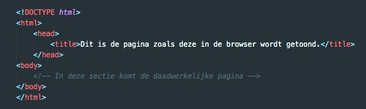

<!DOCTYPE html>
<html>

<head>
    <title>Dit is de pagina zoals deze in de browser wordt getoond.</title>
</head>

<body>
    <!-- In deze sectie komt de daadwerkelijke pagina -->
</body>

</html>


De style Attribute
Deze wordt gebruikt om een een style aan een element toe te voegen, denk aan kleur, font, grootte en meer..
<h2 style="background-color: #ff0000;">Mijn eerste HTML pagina.</h2>

De href attribute
Deze wordt gebruikt om de de URL weer te geven waar de link naartoe gaat.
<a href="https://www.techgrounds.nl"></a>

De src attribute
Deze wordt gebruikt het path aan te geven naar de afbeelding die getoond wordt.


De width and height Attribute
De  tag heeft ook width en height attribute nodig, deze geven de breedte en hoogte van de afbeelding
aan (in pixels).


De alt attribute
Deze wordt gebruikt om een text weer te geven, wanneer de afbeelding niet wordt getoond.


<!-- VRAAG 3-->

<h4>4. HTML gebruikt basis tags om structuur op te bouwen. De &lt;html&gt;, &lt;head&gt; en
    &lt;body&gt;.<br> Geef voor elke element aan waarvoor het dient.</h4>
<p>De tags van een webpagina mogen niet zomaar in een willekeurige volgorde staan. Hier zijn structuur eisen
    voor gedefinineerd. Hoewel er veel elementen optioneel zijn, heeft elke pagina grofweg de volgende
    opbouw:</p>



<br>
<p>Zoals je ziet, begint het document met de text
    <!DOCTYPE html>. Dit geeft aan dat het om een HTML-document gaat.
    Vervolgens wordt de basistag, &lt;html&gt; geopend. In deze tag staat de rest van de pagina.
    De rest van de pagina is verdeeld in twee onderdelen: &lt;head&gt;en &lt;body&gt;
    De &lt;head&gt; wordt gebruikt om aanvullende informatie over de pagina mee te geven. In een
    &lt;head&gt; wordt in ieder geval de titel van de pagina vermeld in zijn eigen <title> element.
        De &lt;body&gt; beschrijft de daadwerkelijke inhoud van de pagina. De volledige paginastructuur
        zaols de eindgebruiker deze ziet, komt dus tussen deze twee &lt;body&gt;&lt;/body&gt; tags te staan.
</p>

<!-- VRAAG 4 -->


6. Waarom is een goede HTML Structuur belangrijk? Is deze code een goede structuur? Leg uit.


<!DOCTYPE html>
<html>

<head>
    <meta charset="utf-8">
    <title>Quick hummus recipe</title>
</head>

<body>
    Quick hummus recipe

    This recipe makes quick, tasty hummus, with no messing. 
    It has been adapted from a number of different recipes that I have read over the years.

    Hummus is a delicious thick paste used heavily in Greek and Middle Eastern dishes. 
    It is very tasty with salad, grilled meats and pitta breads.

    Ingredients

    1 can (400g) of chick peas (garbanzo beans)
    175g of tahini
    6 sundried tomatoes
    Half a red pepper
    A pinch of cayenne pepper
    1 clove of garlic
    A dash of olive oil

    Instructions

    Remove the skin from the garlic, and chop coarsely
    Remove all the seeds and stalk from the pepper, and chop coarsely
    Add all the ingredients into a food processor
    Process all the ingredients into a paste.
    If you want a coarse "chunky" hummus, process it for a short time
    If you want a smooth hummus, process it for a longer time

    For a different flavour, you could try blending in a small measure of lemon and coriander, 
    chili pepper, lime and chipotle, harissa and mint, or spinach and feta cheese. 
    Experiment and see what works for you.

    Refrigerate the finished hummus in a sealed container. 
    You should be able to use it for about a week after you've made it. 
    If it starts to become fizzy, you should definitely discard it.
</body>

</html>


Deze code heeft een goede structuur, omdat het document begint met de text
<!DOCTYPE html>. Dit geeft aan dat het om een HTML-document gaat.
Vervolgens wordt de basistag, <html> geopend. In deze tag staat de rest van de pagina.
De rest van de pagina is verdeeld in twee onderdelen:

<head> en

<body>
    De

    <head> wordt gebruikt om aanvullende informatie over de pagina mee te geven. In een

        <head> wordt in ieder geval de titel van de pagina vermeld in zijn eigen <title> element.
                verder wordt ook de
                <meta> tag binnen de

                <head> gebruikt, deze geeft metadata weer van een HTML document. Metadata is data (informatie) over
                    data.
                    De

                <body> beschrijft de daadwerkelijke inhoud van de pagina. De volledige paginastructuur zaols de
                    eindgebruiker deze ziet, komt dus tussen deze twee

        <body></body> tags te staan.


        8. Wat betekent nesting? Codeer een voorbeeld met nesting erin. 
    Je kan de meeste elementen binnen in elkaar zetten. Bijvoorbeeld zoals in dit voorbeeld:


    <p>
        Bekijk filmpjes op <a href="http://www.youtube.com/">YouTube</a>.
    </p>


    <p>Deze tekst vormt een paragraaf.</p>
    <p>Deze tekst vormt een paragraaf.</p>


  
    <p>Deze tekst vormt een paragraaf<br>en gaat verder op een nieuwe regel.</p>
    


    Je hebt hier een a element dat in een p element zit. En dat p element zit dan weer in het body element van de pagina. Dat noemen we ‘nesten’.